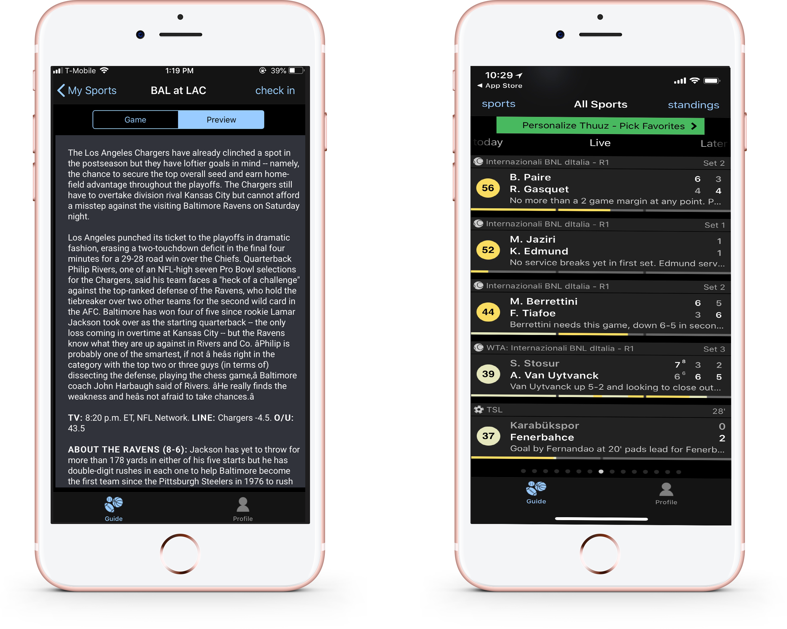
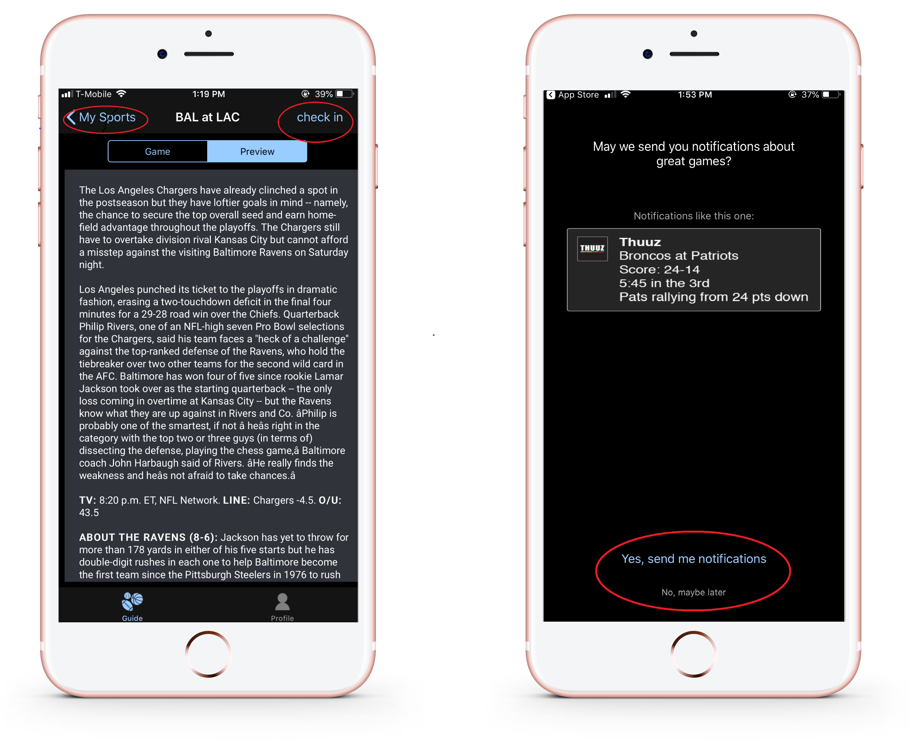
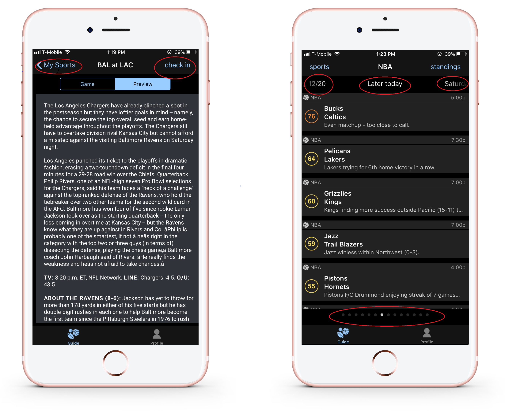
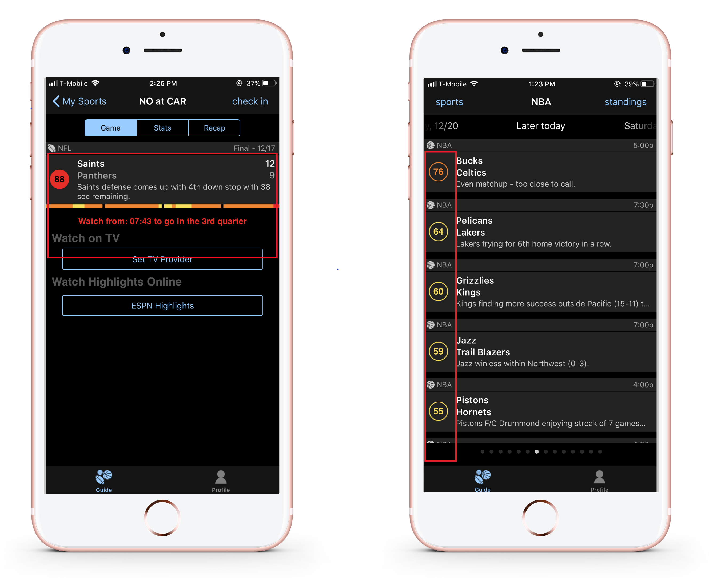

Overview
Duration
April 2018 to June 2018
(10 weeks)
Task
Redesign an existing app using evidence-based design and UX research methodologies.
The App: Thuuz Sports
Thuuz is a mobile sports application that provides its users with game statistics and highlights of their favorite sports. However, the app differentiantes itself from its competitors with an unique algorithm that determines the excitement of games and ranks them based on a numerical scale from 0-100. Although it is a promising feature, it is unfortunately masked by the various usability issues found through user research our team conducted.
Usability Issues
Information overload
Bad Use of Color & Font
Counter-intuitive navigation
Confusion of Excitement Score
Prototypes
Low-Fidelity Prototype
High-Fidelity Prototype
Our Redesign
Present the Right Information
The original design crowded too much information within the homepage. Our new design separates and prioritizes information. This allows users to find what they're looking for almost immediately. In addition, we added an universal search functionality, which also allows users to make searches and a filter option in which they can choose what information they want to see on their feed.
Make Navigation Clear & Simple
We created a vertical pop-up menu which the user can access at all times by clicking the T bubble at the bottom right corner.
Emphasize Excitement Score
We created a chart that improves the display of the excitement score calculated throughout the game. Users would now be able to better understand the score and how it fits with the game they are watching.
Inspirations

We adhered to Nielsen's Heuristics when designing the new interface and took inspiration from the following applications: Tumblr, and the App Store (iOS). Tumblr has a quick and easy-to-use, pop-up navigation for posting content which users can access any time. The App Store displays its content through the use of card-like tiles which present information in a clear and minimal way. View UX Report